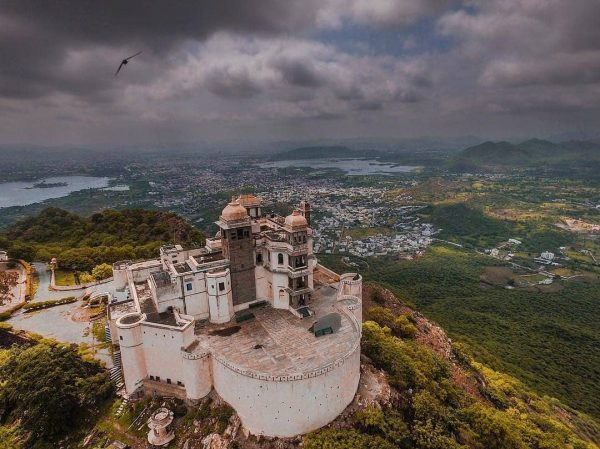
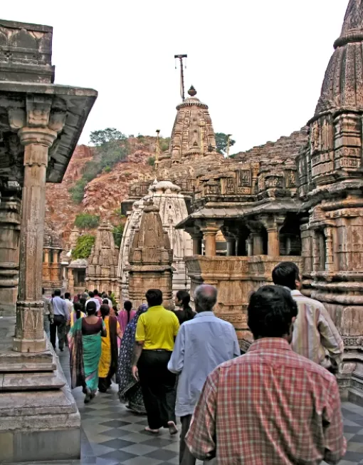
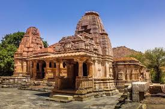
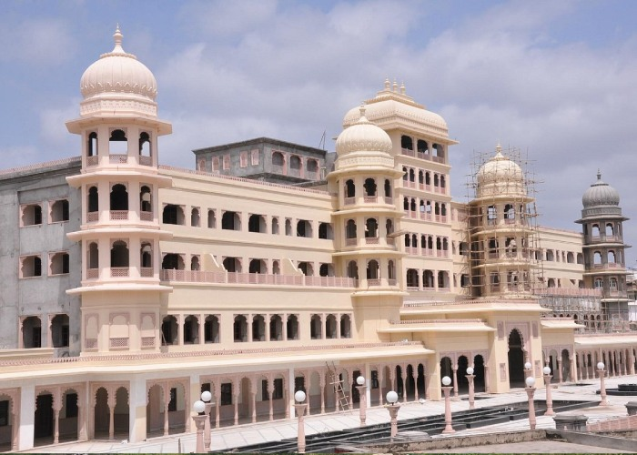
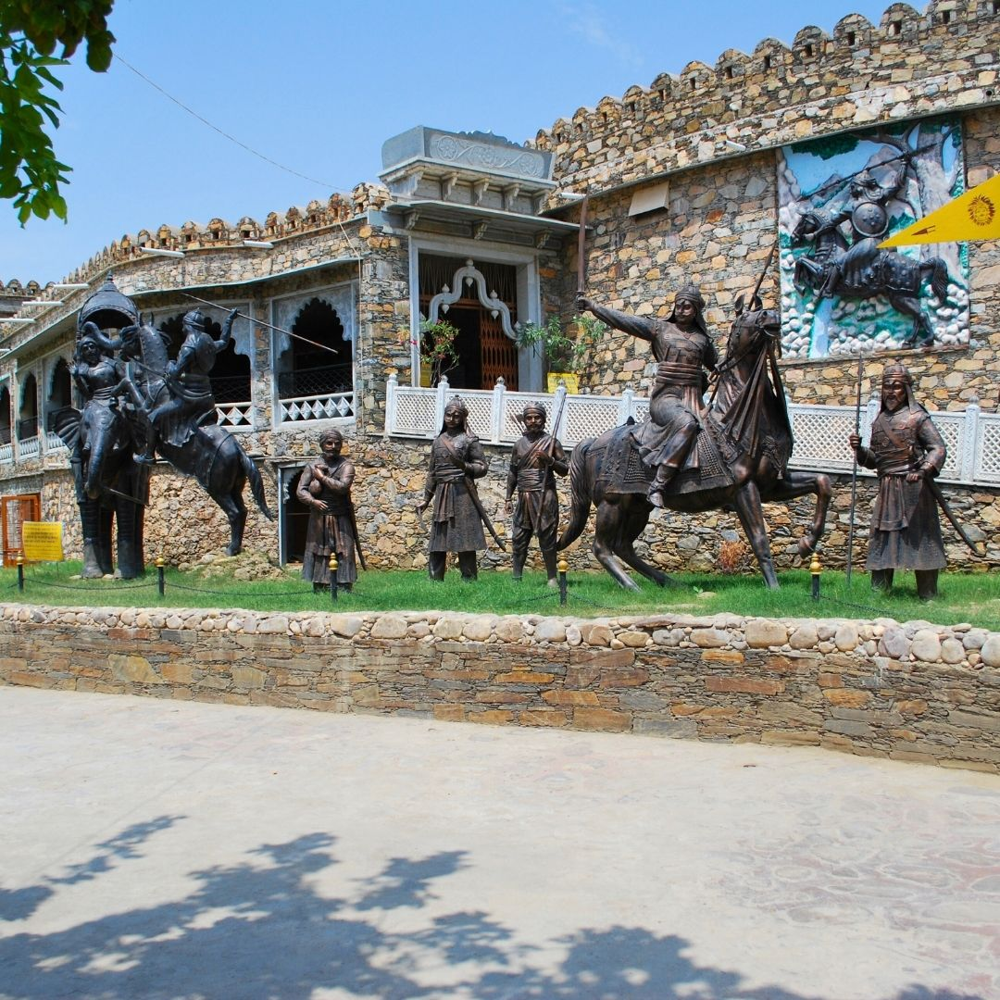
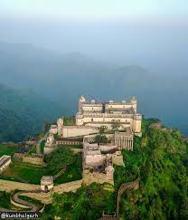
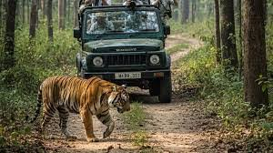
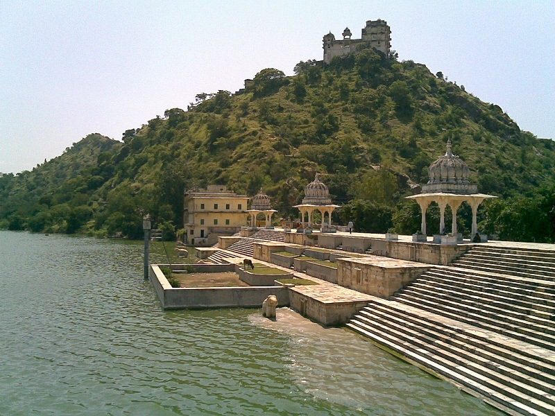
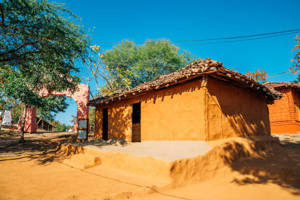
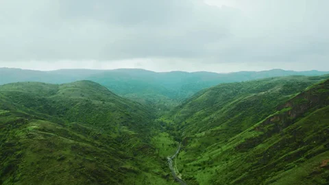

10 Incredible Places to Visit Near Udaipur
for a Day Trip
While Udaipur's lakes, palaces, and heritage streets can easily keep travelers occupied for several days, the region surrounding the city is equally fascinating.

Ancient temples, hilltop forts, wildlife sanctuaries, royal retreats, and rural landscapes offer memorable experiences just a short drive away.
One of the advantages of staying a little longer in Udaipur is the opportunity to explore the wider Mewar region. Many of these destinations can be visited as comfortable day trips, allowing you to return to your hotel in Udaipur by evening.
Whether you're interested in history, nature, photography, spirituality, or simply escaping the city for a few hours, these incredible places near Udaipur deserve a spot on your itinerary.
Why Explore Beyond Udaipur?
Most visitors focus on famous attractions such as City Palace and Lake Pichola. However, the surrounding region offers a deeper understanding of Rajasthan's culture, history, and natural beauty.
Day trips allow travelers to:
Discover lesser-known heritage sites
Experience rural Rajasthan
Explore ancient temples
Visit wildlife habitats
Enjoy scenic drives through the Aravalli Hills
Escape tourist crowds

Eklingji Temple
One of the most important religious sites in Rajasthan, Eklingji Temple is dedicated to Lord Shiva and has been closely associated with the rulers of Mewar for centuries. Built originally in the 8th century, it remains an active place of worship.

Nagda and Sas Bahu Temples
Located near Eklingji, the historic village of Nagda was once the capital of Mewar. Despite the name, the temples are not dedicated to a mother-in-law and daughter-in-law but derive their name from "Sahasra Bahu," meaning Lord Vishnu.

Nathdwara
One of Rajasthan's most important pilgrimage destinations, Nathdwara Temple attracts devotees from across India. Even non-religious travelers appreciate the town's unique atmosphere and cultural significance.

Haldighati
History comes alive at Battle of Haldighati, where Maharana Pratap fought one of the most famous battles in Rajasthan's history. The region offers fascinating insights into the legacy of Mewar's legendary ruler.

Kumbhalgarh Fort
A UNESCO World Heritage Site and one of Rajasthan's most impressive forts, Kumbhalgarh Fort is often considered one of the best day trips from Udaipur. The fort's wall stretches over 36 kilometers, making it the second-longest continuous wall in the world after the Great Wall of China.

Kumbhalgarh Wildlife Sanctuary
Located near the fort, the sanctuary offers a completely different experience. The sanctuary is particularly attractive to nature lovers looking to combine history with wildlife exploration.

Ranakpur Jain Temple
Widely regarded as one of the most beautiful Jain temples in India, Ranakpur Jain Temple is famous for its extraordinary marble architecture. Many visitors consider Ranakpur one of the most impressive architectural sites in Rajasthan.

Jaisamand Lake
Also known as Dhebar Lake, Jaisamand Lake is one of Asia's largest artificial lakes. Compared to Udaipur's more famous lakes, Jaisamand offers a quieter and less crowded experience.

Shilpgram
Located just outside Udaipur, Shilpgram is a rural arts and crafts complex showcasing traditional lifestyles from Rajasthan and neighboring states. It's a great introduction to Rajasthan's cultural diversity.

Rayta Hills
One of the newer attractions near Udaipur, Rayta Hills has quickly become popular for its scenic landscapes and elevated viewpoints. It's particularly attractive during the monsoon and winter seasons.
Suggested Day Trips Based on Interests
For History Lovers
Kumbhalgarh Fort · Haldighati · Eklingji · Nagda
For Nature Enthusiasts
Jaisamand Lake · Rayta Hills · Kumbhalgarh Wildlife Sanctuary
For Spiritual Travelers
Nathdwara · Eklingji Temple · Ranakpur Jain Temple
For Families
Shilpgram · Jaisamand Lake · Rayta Hills


Where to Stay While Exploring Udaipur and Beyond
Many of these destinations are best explored as day trips from the city rather than overnight stays.
Choosing a centrally located hotel in Udaipur allows travelers to comfortably explore nearby attractions while enjoying the convenience of returning to the city each evening. Heritage and boutique hotels in Udaipur are particularly popular among travelers who want their accommodation to be part of the overall Rajasthan experience.
For visitors seeking a more intimate heritage atmosphere, boutique stays such as Kaladwas Lal Haveli provide a combination of traditional Mewari architecture, personalized hospitality, and easy access to both Udaipur's attractions and nearby day-trip destinations.
Book Your Stay View Rooms